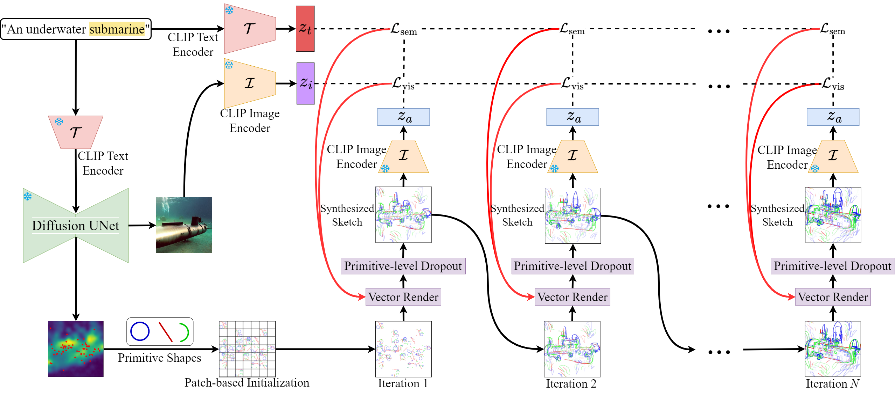
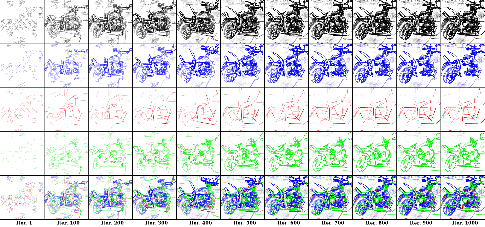
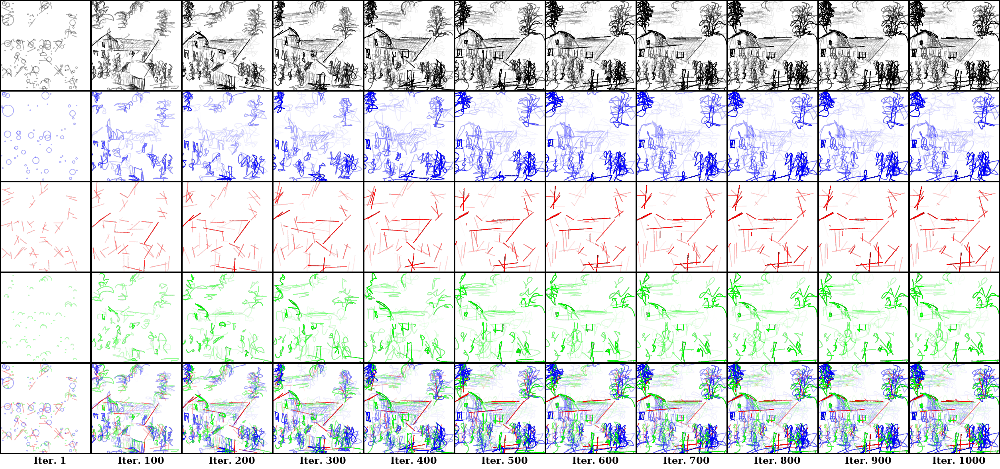
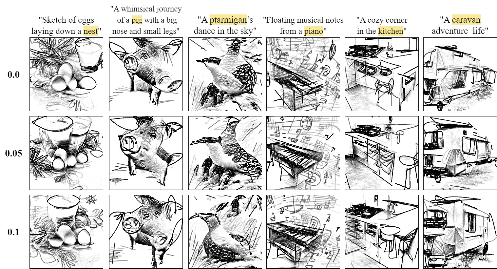
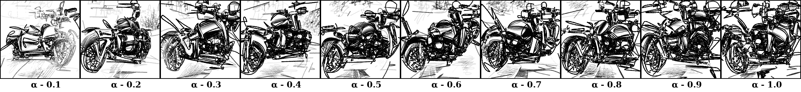
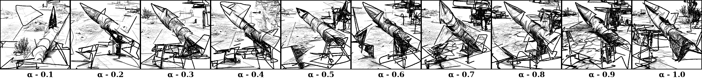
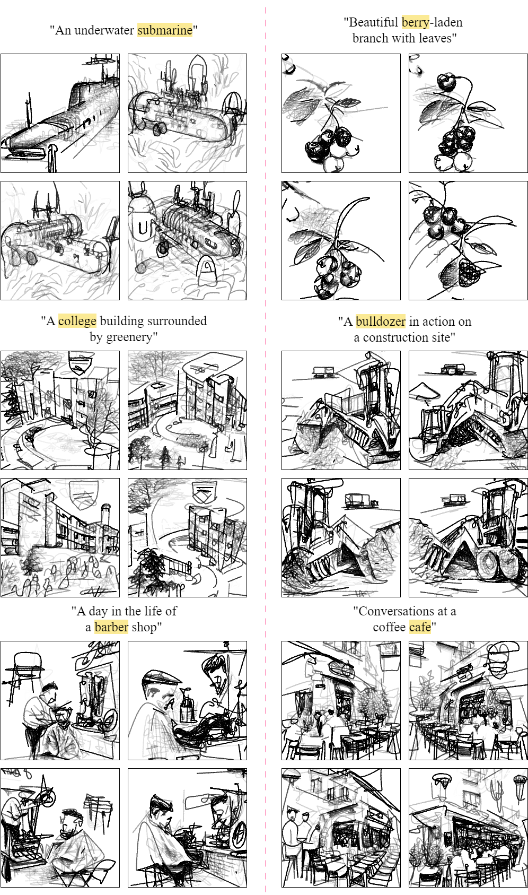
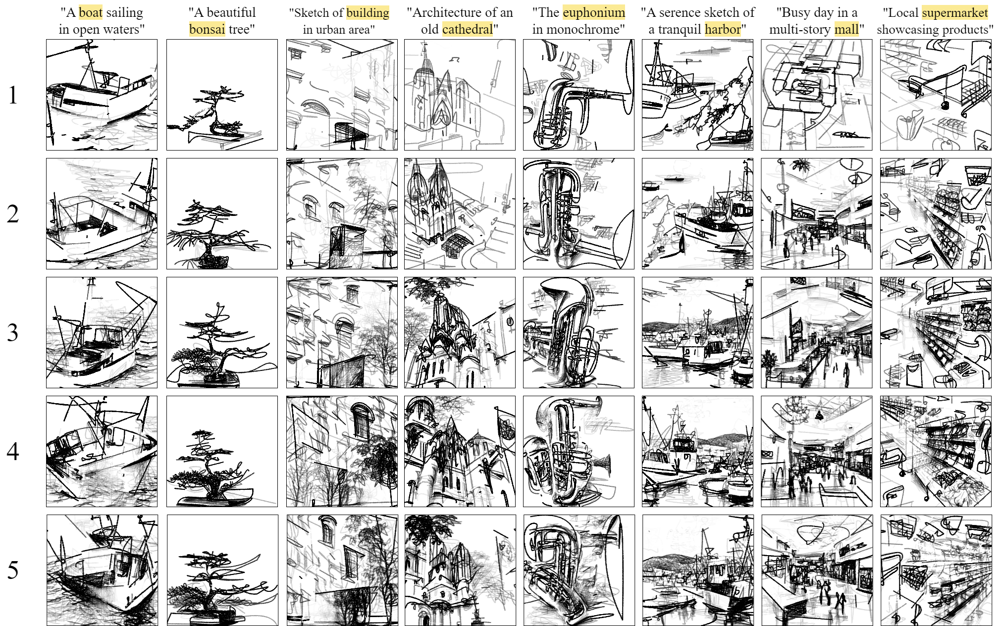

From Prose to Portraits: Mechanism of Sketch Synthesis

CLIPDrawX comprises strategic canvas initialization, which utilizes diffusion-based cross-attention maps and a patch-wise
arrangement of primitives, along with a primitive-level dropout (PLD). The proposed model, coupled with the use of a pre-trained image
\( \mathcal{I} \) and text \( \mathcal{T} \) encoders from the CLIP model for similarity maximization, positions itself as an efficient and user-friendly tool in the
realm of AI-driven explainable sketch synthesis. The highlighted word is used to create the cross-attention maps.
The total loss, \( \mathcal{L}_\text{total} \) is the summation of two loss functions (semantic loss \( \mathcal{L}_\text{sem} \) and visual loss \( \mathcal{L}_\text{vis} \)), each weighted by their respective coefficients, \( \lambda_\text{sem} \) and \( \lambda_\text{vis} \). These two loss functions balance our sketch synthesis process: semantic loss aligns vector sketches with textual prompts, while visual loss maintains low-level spatial features and perceptual coherence. This combination effectively captures the intricate relationship between semantic fidelity and geometric accuracy.
The total loss, \( \mathcal{L}_\text{total} \) is the summation of two loss functions (semantic loss \( \mathcal{L}_\text{sem} \) and visual loss \( \mathcal{L}_\text{vis} \)), each weighted by their respective coefficients, \( \lambda_\text{sem} \) and \( \lambda_\text{vis} \). These two loss functions balance our sketch synthesis process: semantic loss aligns vector sketches with textual prompts, while visual loss maintains low-level spatial features and perceptual coherence. This combination effectively captures the intricate relationship between semantic fidelity and geometric accuracy.
$$\mathcal{L}_\text{total} = \lambda_\text{sem} \mathcal{L}_\text{sem} + \lambda_\text{vis} \mathcal{L}_\text{vis}$$
Unraveling Textual Descriptions into Artistic Creations

“A spaceship flying[..]” “A spaceship flying in a starry sky”

“An astronaut in [..]” “An astronaut in space”

“A camp in [..]” “A camp in wilderness”

“A cozy corner [..]”“A cozy corner in the kitchen”

“Beauty of a secluded pond[..]”“Beauty of a secluded pond nestled in the heart of woods”

“A dolphin leaping [..]”“A dolphin leaping [..]”

“Dark, mysterious dungeon[..]”“Dark, mysterious dungeon tunnel, dimly lit”

“Floating musical notes[..]”“Floating musical notes from a piano”

“An underwater submarine”“An underwater submarine”

“A standing motorcycle”“A standing motorcycle”
For more results, please visit gallery!
From Doodles to Details: The Explainability of Sketch Synthesis
As shown in the figure below, we demonstrate that our CLIPDrawX model offers the ability to synthesize explainable sketches whose strokes are primitive shapes like circles (second row from the top), straight lines (third row) and half circles (fourth row). These individual strokes can be tracked through their evolution in successive iterations of the optimization process. Notably, the model intuitively represents different parts of the synthesized sketch with appropriate primitive shapes. For example, the chassis and handlebars of the synthesized motorcycle are rendered with straight lines, while the wheels are depicted using circles and semicircles.Our model skilfully captures the dynamics of shape or scene evolution, displaying varying levels of flexibility based on the degree of freedom, which is linked to the number of control points in a shape. In the farm example, it assigns straight lines to simpler structures like a house's roof and walls, while more complex elements like grass and crops are made with semi-circles, providing more flexibility. Even more intricate structures, like trees, are rendered using circles, the most flexible shape, illustrating the model's skill in using various primitives for different levels of complexity. This strategic use of shapes enhances the model's ability to create detailed, nuanced sketches.

“A standing motorcycle”

“A peaceful afternoon at the farm sketch”
For more results, please visit Explainable Sketch Synthesis!
Fundamental Finesse: The Debut of Primitive-level Dropout
Primitive-level dropout enhances the utilization of primitive shapes. It facilitates the optimization process in a way that forces every primitive to independently encode some specific concept in the sketch. As a result, the number of noisy strokes in the sketch, that do not contribute towards depicting anything meaningful, is reduced. Moreover, PLD expedites convergence by reducing the number of steps required for structure creation, thanks to its ability to promptly detect relevant strokes.

Gentle Strokes: Sketching with Diminished Opacity
In traditional human sketching, artists often begin with a light outline or faint layout, serving as a foundation for the artwork. This initial phase sets the broader structure and composition. As the artwork advances, artists intensify strokes, especially focusing on crucial elements to make them prominent, ensuring each stroke adds value to the overall piece. Drawing a parallel to the digital realm, in CLIPDrawX, we have curated a similar methodology. Here, the initialization of primitive shapes starts with a low opacity value, denoted as \(\alpha\). This can be likened to the faint layout artists create. As the system begins its optimization process, based on relevance and significance, the opacity of certain primitives is incrementally increased. This mirrors the artist's method of iteratively intensifying strokes that are deemed crucial to the sketch's integrity.

“A standing motorcycle”

“A missile ready to launch”
Shades of Creativity: Exploring Sketch Variations

Patch Dynamics: The Influence of Primitive Counts

- 1. Few primitives yield abstract sketches (rows 1-2).
- 2. Optimal detail emerges with 3-4 primitives (rows 3-4).
- 3. Excessive counts (row 5) complicate optimization, hindering synthesis.
State-of-the-art Comparison
Our CLIPDrawX model is compared with three related methods, including \(\textbf{CLIPDraw}\), which synthesizes CLIP-guided text-to-sketches by optimizing Bezier curves; \(\textbf{BigGAN}\), utilizing a pre-trained BigGAN generator for image production, and \(\textbf{VectorFusion}\), employing a text-conditioned diffusion model for vector sketch creation. We maintain the original settings of all these models to ensure a fair comparison. As demonstrated below, our CLIPDrawX produces sketches that are noticeably cleaner than those from CLIPDraw, likely due to our method's use of primitive-level dropout and the initialization of primitives at reduced opacity. The images from BigGAN often lack proper details and appropriate semantics, and the vector sketches from VectorFusion tend to be overly abstract and detail-deficient. In contrast, our CLIPDrawX consistently delivers clean sketches with accurate details and semantics. The reduced noise in our sketches is attributed to the minimized control points, learnable opacity for primitives, and primitive-level dropout, thus reducing the need for manual intervention and parameter adjustments.
For more results, please visit SOTA Comparison!
Final takeaways
We introduced the notion of explainable sketch synthesis through optimization via simple geometric primitives like straight lines, circles, and semicircles. To this end, we presented CLIPDrawX, a model that synthesizes highly expressive sketches in an explainable manner via simple linear transformations (computed through optimization) on such primitives, leveraging novel techniques such as strategic sketch canvas initialization for synthesizing clean sketches, and the introduction of primitive-level dropout for producing sketches with low noise, collectively enhance the model's efficiency and output quality. The extensive experiments and ablation studies underscore the model's superiority over existing methods, showcasing its capability to produce sketches that are not only aesthetically appealing but also semantically rich and explainable. Combining advanced optimization with intuitive design, CLIPDrawX stands out in AI-driven art creation, guiding future progress in Explainable AI and creative computing.
BibTeX
@misc{mathur2023clipdrawx,
title={CLIPDrawX: Primitive-based Explanations for Text Guided Sketch Synthesis},
author={Nityanand Mathur and Shyam Marjit and Abhra Chaudhuri and Anjan Dutta},
year={2023},
eprint={2312.02345},
archivePrefix={arXiv},
primaryClass={cs.CV}
}